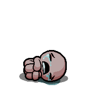
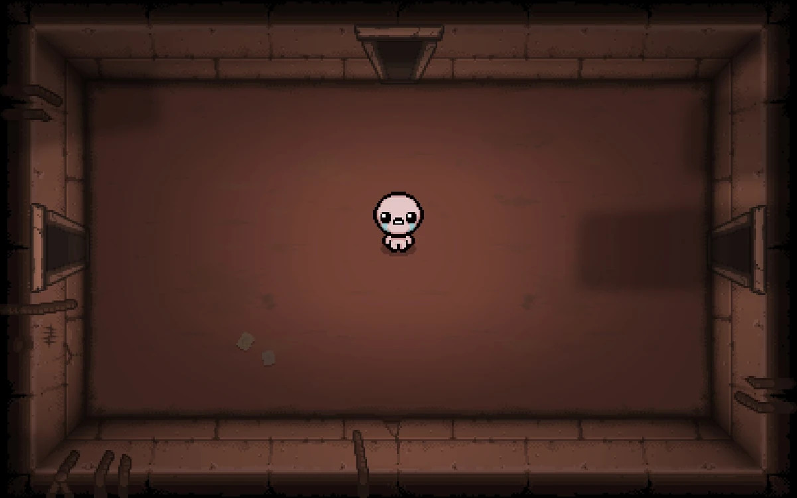

THE BINDING OF ISAAC
Bem-vindo ao Porão
Entre em salas, enfrente monstros, encontre itens e tente sobreviver.
Ver itens
Sobre o jogo
The Binding of Isaac é um jogo de ação rogue like.
Cada partida muda os andares, inimigos e itens encontrados pelo jogador.
O objetivo é avançar pelo porão enfrentando diferentes desafios.
